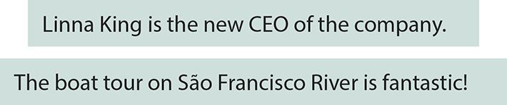
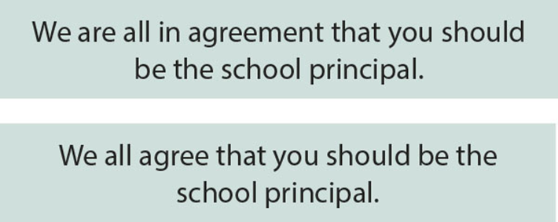
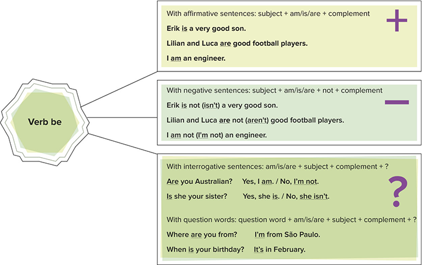
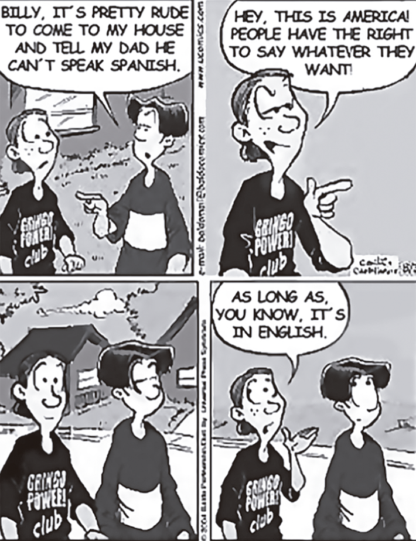
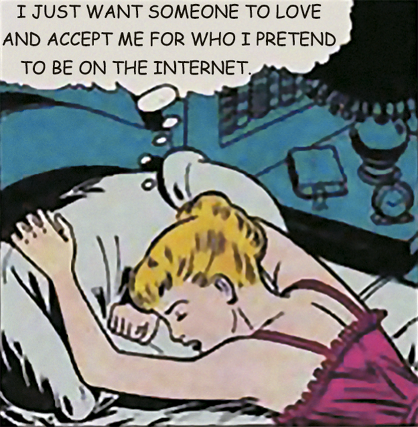

Family has always played an important role in the development of society.
evgenyatamanenko/iStockphoto.com
The family is one of the oldest institutions and it has always come in a multitude of shapes and sizes. At the beginning of times, the role of the family was not affective or emotional. This did not mean, though, that love was absent; it means that sentiment was not the main reason that kept the families together – survival was. The main objectives of families in the past were promoting the conservation of goods; carrying out ordinary responsibilities or a particular office; providing mutual help in times of crisis; and protecting people’s honor or lives.
With cultural, social and economic transformations, new family structures have emerged, and they aim at establishing an environment of affection, solidarity, loyalty, confidence, respect and love. While the traditional family unit of mom, dad and kids isn’t extinct, more modern configurations have been rapidly taking form in the past decades.
Today’s modern families are often blended with a combination of parents, stepparents, siblings, stepsisters or stepbrothers, half-siblings shared with one biological parent, and even stepgrandparents, as well as grandparents, aunts, and uncles. Essentially, family means the people we have a sense of attachment to and connection with.
What comes to your mind when you hear the word “family”?
Do you agree with the saying “blood is thicker than water”?
Put yourselves in your parents’ shoes: how hard is it to raise adolescents in this modern world?
Neste capítulo serão abordadas as habilidades
EM13LGG301
,
EM13LGG402
e
EM13LGG403
.
Dive in
Pronouns
Read the dialogue between two friends and observe the words in bold.
The highlighted terms are called pronouns, which are words or phrases that are used as substitutes for a noun or noun phrase, which is known as the pronoun’s antecedent. A pronoun is a short word and can do everything that a noun can do. It is one of the building blocks of a sentence.
Personal pronouns
Personal pronouns are short words we use as a simple substitute for a proper name or a noun in a sentence. The personal pronouns are used to indicate people, places and objects. Each of the English personal pronouns shows us the grammatical person, gender, number, and case of the noun it replaces. In English, personal pronouns are classified into subject and object pronouns.
Subject pronouns
The subject pronouns act as the subjects that perform the verbal action. They usually appear in the beginning of a sentence before verbs or prepositions. Regarding the number, they can be singular (I, you, he she, it) and plural (we, you, they).They are divided into three genders: male, female and neuter (which refers to places, animals, objects, feelings, ideas, natural phenomena etc.). Look at some examples of pronouns that act as subjects of a sentence.
The twins Simon and Sarah are John and Ruth's children. They were born in 1950.
Object pronouns
The object pronouns act as the objects of the sentences. They usually appear after verbs and prepositions and are part of the predicate of the sentence. They are used in the singular (me, you, him, her, it) and in the plural (us, you, them). The neuter form “it” refers to places, animals, objects, feelings, ideas, natural phenomena etc. Observe the examples on the next page.
Notice that the pronouns “you” and “it” may perform as subject or object pronouns. The spelling is the same, but the position and the function in the sentence change them. Look at the chart for a general overview.
Pronouns
Subject pronouns
Object pronouns
1st person singular
I
Me
2nd person singular
You
You
3rd person singular
He She It
Him Her It
1st person plural
We
Us
2nd person plural
You
You
3rd person plural
They
Them
We often use the subject pronoun "it" to introduce a remark:
It is such a lovely evening!
It is important to study hard.
Is it normal to love chocolate so much?
We also often use "it" to talk about the weather, temperature, time and distance:
It's raining
Is it nine o'clock yet
It's 100 kilometers from here to the mountains.
Now, test what you learned about personal pronouns.
1
To use the correct personal pronoun, we may need to know the number, person and ______________ of the noun it’s replacing.
2
We classify the personal pronoun “they” as a/an pronoun.
3
Which pronoun completes the following sentence correctly? “Dark clouds mean could rain any minute."
4
Which one is correct in the sentence “Joe drove Mary and home.”?
we
i
me
5
Now, fill in the blanks with the correct pronoun. Go back to the explanation anytime you need it.
Our homework is so hard. Can you help ___________, please?
So, you are the famous Toby. I like _________ already!
Jennifer has got three bikes, can you believe it? They belong to ___________ .
I am Mel, the new coach. Do you know ___________ ?
Oh, your house looks amazing. I like _____________ very much.
Tom loves animals. They make _____________ so happy!
There you are Jack and Jill, I can see ____________ !
Those are Pamela and Samuel. We call _____________ Pam and Sam.
Verb be: Simple Present
The verb be is the most common and the most important verb to learn in English. It is a flexible verb and has many different meanings. We use the verb be:
To say who we are. I’m Fabiana and this is my husband, Daniel.
To talk about the weather. It was a refreshing summer rain.
To talk about the time. It’s ten p.m. You’re late.
To talk about places. Recife is in the Northeast of Brazil.
To talk about age. How old are you ? I am 48 years old.
To talk about how we feel. How is Cindy? She is super tired.
To greet people. How are you? I’m fine, thanks!
To describe things and people. This is a very expensive restaurant. Lord Byron is so elegant!
The verb be can act as a linking verb, joining the subject of the sentence to a complement or adjective complement. In such case, there isn’t any action in the sentence: the subject complement reidentifies the subject; the adjective complement modifies it.
The verb be may also be combined with a past participle to form the passive voice. In this situation, the subject of an action is not as important as what the subject performs.

In some situations, the use of be is unnecessary and it can be removed to cause “effect”. This usually happens when be sits between dependent clauses.
The verb be can also appear in tedious writing, and its use is considered a roundabout way of saying something that could be said in simpler manners. The following chart presents simple verbs that could replace the be constructions.
Simple present as replacement
Be desirous of
desire / want
Be in agreement
agree
Be in existence
exist
Be in possession of
possess
Be operative
operate
Be supportive of
support
Look at the example:


While reading
6
Skim the text and answer: what is it about?
7
Who are the writers of Family Forest?
8
How old is the book My Two Blankets?
Eight Australian picture books that celebrate family diversity
The official label used by the Australian government to define a traditional family (a two-parent family with biological or adopted children only) is “intact”: Not damaged or impaired in any way. Complete. Whole. Unbroken.
This is problematic when we think about all the other possible ways to live in a family: blended, step, single parent, foster, or any other family that diverges from we might call the “traditional” family model
In Australian picture books, family representation has been overwhelmingly traditional; not just “intact”, but specifically white, middle class, with a mum, dad, and a (frequently blonde) male child protagonist. Children from diverse families are rarely represented.
But this may be changing. The following are eight recently published Australian picture books that break the mould and celebrate family diversity, showing that all families – whatever shape they take – are intact.[...]
The Patchwork Bike by Maxine Beneba Clarke and Van T Rudd (2017)
This book tells the story of three siblings and their patchwork bike – a bike that they have made themselves out of scrap. [...] Not only does this book showcase a single parent family of colour, but it also shows a very different lifestyle and landscape to what many Australian children would be familiar with.
I’m Australian Too by Mem Fox and Ronojoy Ghosh (2017)
[...] It showcases families from different cultures and backgrounds (including several families that have fled war torn countries, and one young girl living in a refugee camp). The story acknowledges and embraces our differences while highlighting that we are all connected – and all Australian – regardless of where we come from.
Bigger Digger by Brett Avison and Craig Smith (2011)
Brett Avison’s Bigger Digger is the first of four books featuring a young boy called Bryn and his dogOscar. In this story, Bryn and Oscar make an exciting discovery when digging in the backyard, and need bigger and bigger diggers to uncover what they have found. [...] The use of Mum and Ted as titles for the adult characters is a simple but effective way of introducing the concept of step families.
Family Forest by Kim Kane and Lucia Masciullo (2010)
This book showcases one particular family – with half, whole and step siblings as well as different parental relationships (a father and stepmother, and a mother and her partner). [...] It is often difficult to explain a topic or issue without sacrificing story, but Family Forest manages to explain blended families in a fun and engaging way.
My Two Blankets by Irena Kobald and Freya Blackwood (2014)
This book tells the story of a young girl who leaves her war torn country and settles in Australia. Raised by her auntie, the book showcases family diversity in both formation and culture. The story examines the character’s feelings of loneliness and isolation in a country where everything is “strange”, including the language, which she doesn’t understand. To cope, she metaphorically wraps herself in a blanket of things that are familiar. After befriending a white Australian girl, she starts to make herself a new blanket with her newfound sense of belonging.
The Lost Girl by Ambelin Kwaymullina and Leanne Tobin (2014)
This book tells the story of a young Aboriginal girl who is lost, but finds her way home to her people’s camp with the guidance of mother nature. Instead of having a mum and a dad, or one biological family, the story refers to the girl’s mothers, aunties, grandmothers, fathers, uncles and grandfathers. This book is unique in that it showcases a family type very rarely explored – traditional Aboriginal kinship groups.
One Photo by Ross Watkins and Liz Anelli (2016)
In this book, a father with early onset Alzheimer’s buys himself a camera and starts snapping pictures of the things that he wants to remember. This confuses and upsets his wife and son (who is telling the story), as he hasn’t taken a single photo of them. Eventually, the father passes away and leaves one photo behind – a photo of him with his wife and son – and they realise that he wasn’t taking photos of things he wanted to remember, but things he wanted them to remember about him. One photo examines both the illness and death of a parent in a touching and age-appropriate way.
MOKRZYCKI, Sarah. “Eight Australian picture books that celebrate family diversity”. The Conversation, Jan 9th, 2019. Available at https://theconversation.com/eight-australian-picture-books-that-celebrate-family-diversity-109429. Accessed on June 23rd, 2021.
After reading
9
Write here, with your own words, an example of a traditional family, according to the text.
10
From the tone of the text, we can infer the author’s opinion about the subject. How does Sarah Mokrzycki feel about the fact that diverse families are rarely represented? Write down phrases from the text that prove your answer.
11
The author mentions four other possible ways to live in a family. Match the words to their definitions taken from various dictionaries:
Blended or step family
Single or lone parent family
Foster family
( ) A family that provides custody or guardianship for children whose parents are dead or unable to look after them. ( ) A family that consists of a married couple and one or more children from a previous marriage or relationship. ( )A family in which there is only one parent, a mother, a father or someone who has a child or children but no husband, wife, or partner who lives with them.
12
Read the descriptions of the books and the statements that follow. Write T (true) or F (false) accordingly. Correct the false sentences.
( ) The Patchwork Bike tells the story of a single white mother and her two children. ( ) I’m Australian Too includes the story of a war refugee. ( ) Bigger Digger presents the readers with the concept of foster families. ( ) The fact that Family Forest addresses the issue of blended family instead of just telling the story sacrifices the plot. ( ) In My Two Blankets, the main character literally uses a blanket to protect herself from adversity. ( ) The Lost Girl tells the story of a girl who faces difficulties with the help of a diverse family. ( ) One Photo describes a traditional family in an emotional and peculiar way.
PRACTICE IT!
EPCar-MG 2018
Texto para as questões de 1 a 6.
FOOD SHORTAGE CAUSES, EFFECTS AND SOLUTIONS
Food shortage is a serious problem facing the world and is prevalent in sub-Saharan Africa. The scarcity of food is caused by economic, environmental and social factors such as crop failure, overpopulation and poor government policies are the main cause of food scarcity in most countries. Environmental factors determine the kind of crops to be produced in a given place, economic factors determine the buying and production capacity and socio-political factors determine distribution of food to the masses. Food shortage has far reaching long and short term negative impacts which include starvation, malnutrition, increased mortality and political unrest1. There is need to collectively address the issue of food insecurity using both emergency and long term measures.
Causes of food shortages
There are a number of social factors causing food shortages. The rate of population increase is higher than increase in food production. The world is consuming more than it is producing, leading to decline in food stock and storage level and increased food prices due to soaring2 demand. Increased population has led to clearing of agricultural land for human settlement reducing agricultural production (Kamdor, 2007). Overcrowding of population in a given place results in
urbanization of previously rich agricultural fields. Destruction of forests for human settlement, particularly tropical rain forest has led to climatic changes, such as prolonged droughts and desertification. Population increase means more pollution as people use more fuel in cars, industry, domestic cooking. The resultant effect is increased air and water pollution which affect the climate and food production.
Environmental factors have greatly contributed to food shortage. Climatic change has reduced agricultural production. The change in climate is majorly caused by human activities and to some small extent natural activities. Increased combustion of fossil fuels due to increasing population through power plant, motor transport and mining of coal and oil emits green house gases which have continued to affect world climate. Deforestation of tropical forest due to human pressure has changed climatic patterns and rainfall seasons, and led to desertification which cannot support a crop production. Land degradation due to increased human activities has impacted negatively on agricultural production (Kamdor, 2007). Natural disasters such as floods, tropical storms and prolonged droughts are on the increase and have devastating impacts on food security particularly in developing countries. There are several economic factors that contribute to food shortage. Economic factors affect the ability of farmers to engage in agricultural production. Poverty situation in developing nations have reduced their capacity to produce food, as most farmers cannot afford seed and fertilizers. They use poor farming methods that cannot yield3 enough, even substantial use. Investments in agricultural research and developing are very low in developing nations. Recent global financial crisis have led to increase in food prices and reduced investments in agriculture by individuals and governments in developed nations resulting in reduced food production.
Effects of food shortage
There are a number of short term effects of food shortage. The impact on children, mothers and elderly are very evident as seen in malnutrition and hunger related deaths. Children succumb to hunger within short period as they cannot stand long period of starvation and they die even before the arrival of emergency assistance.
There are also long term effects of food shortage. These include increase in the price of food as a result demand and supply forces. Increasing cost of food production due to the increase in fuel prices coupled with persistent drought in grain producing regions has contributed to the increase in the price of food in the world. Increase in oil price led to increase in the price of fertilizers, transportation of food and also industrial agriculture. Increasing food prices culminated in political instability and social unrest in several nations across the globe in 2007, in countries of Mexico, Cameroon, Brazil, Burkina Faso, Pakistan, Egypt and Bangladesh among other nations (Kamdor, 2007).
Solution to problem of food shortage
There are some solutions to the problem of food shortage. There is need to reduce production of carbon emissions and pollution to reduce the resultant climatic change through concerted and individual efforts. There is need to invest in clean energy such as solar, nuclear, and geothermal power in homes and industries, because they don’t have adverse effects on the environment (Kamdor, 2007). Rich nations should help poor nations to develop and use clean and renewable energy in order to stabilize green house emissions into the atmosphere (Watson, nd). Government need to work in consultation with climatic bodies, World Bank and the UN to engage in projects aimed at promoting green environment.
Conclusion
Causes of food shortage are well known and can be solved if appropriate measures to solve the problem are taken and effectively implemented. Environmental causes of food shortages are changes in climatic and pollution due to human activities such overgrazing4 and deforestation which can be controlled through legislation.
1. unrest – disagreement or fighting between different groups of people
2. soaring – something that increases rapidly above the usual level
3. yield – to supply or produce something such as profit or an amount or food
4. overgrazing – excessive use of land where animals feed on grass
1
The text
points out how well Burkina Faso dealt with food shortage.
shows a remaining difficulty as well as its way out.
highlights the importance of urbanization for crop fields.
states that land degradation is a natural impact for today’s climatic stability.
2
Some environmental factors that have contributed to food shortage are
land degradation, deforestation and fuel prices.
climatic change, combustion of fossil fuels and floods.
agriculture, fertilizers and cost of food production.
droughts, tropical storms and reduced investments in agriculture.
3
In “Poverty situation in developing nations have reduced their capacity to produce food, as most farmers cannot afford seed and fertilizers.” (lines 55 to 58), the underlined word means
poverty situation.
developing nations.
seed and fertilizers.
most farmers.
4
Starvation, malnutrition, increased mortality and political unrest are mentioned in the text as examples of
food shortage negative impacts.
food shortage main causes.
long term measures to overcome the scarcity of food.
emergency measures to overcome the scarcity of food.
5
The personal pronoun “they” (line 93) refers to
adverse effects.
homes and industries.
geothermal power.
some kinds of clean energy.
6
The text conclusion seems to be
logical and sharp.
nonsense and worn out.
controversial and useful.
excessive and repeated.
7
ITA-SP 2018
AUGMENTATION OF BRAIN FUNCTION: FACTS, FICTION AND CONTROVERSY
Augmentation of brain function is no longer just a theme of science fiction. Due to advances in neural sciences, it has become a matter of reality that a person may consider at some point in life, for example as a treatment of a neurodegenerative disease. Currently, several approaches offer enhancements for sensory, motor and cognitive brain functions, as well as for mood and emotions. Such enhancements may be achieved pharmacologically, using brain implants for recordings, stimulation and drug delivery, by employing brain-machine interfaces, or even by ablation of certain brain areas.
In this Research Topic, we welcome papers critically evaluating the existing methods of brain augmentation, introducing new approaches and probing particular parts of brain circuitry and particular neuronal mechanisms as candidates for an enhancement. We welcome scientists from different fields: from neuroscience of microcircuits to systems neuroscience of large-scale networks and neural engineering. The work can be experimental or computational. Reviews and papers on philosophical and ethical issues are also welcome.
While the scope of possible relevant topics is broad, the authors are encouraged to clearly indicate how their studies address the announced theme of brain augmentation.
Important Note:
All contributions to this Research Topic must be within the scope of the section and journal to which they are submitted, as defined in their mission statements. Frontiers reserve the right to guide an out-of-scope manuscript to a more suitable section or journal at any stage of peer review.
Marque a opção que indica a que it se refere no seguinte excerto: “... it has become a matter of reality…” (linhas 3 e 4).
advances in neural sciences
treatment of a neurodegenerative disease
some point in life
science fiction
augmentation of brain function
8
Col. Naval-RJ 2017
Match the questions to the answers.
Are you on vacation?
Where’s she from?
Are you and Ana married?
Is Julian Italian?
( )
Yes, we are. ( )
She’s from Italy. ( )
No, she isn’t. ( )
No, I’m not.
Choose the option with the correct order.
3 – 2 – 4 – 1
1 – 2 – 4 – 3
3 – 4 – 2 – 1
1 – 4 – 2 – 3
1 – 4 – 3 – 2
Unicamp 2020
Texto para a questão 9.

(Disponível em https://licensing.andrewsmcmeel.com/features/
ba?date=2004-08-03. Acessado em 22/05/2019.)
9
A tirinha apresentada
ironiza uma ideia de liberdade de expressão.
critica políticas de imigração do governo dos EUA.
defende uma visão de inglês como língua mundial.
desaprova o uso da língua materna de imigrantes nos EUA.
Unifesp 2019
Texto para a questão 10.

10
The woman
regrets that people accept only her internet identity.
presents herself in an unreal way on the internet.
discovered that her date is catfishing on the internet.
wishes to be like someone she met on the internet.
fell in love with a fake internet profile.
UFPR-2020
Texto para a questão 11.
More Than Just Children’s Books
Krumulus, a small bookstore in Germany, has everything a kid could want: parties, readings, concerts, plays, puppet shows, workshops and book clubs.
“I knew it was going to be very difficult to open a bookstore, everyone tells you you’re crazy, there will be no future,” says Anna Morlinghaus, Krumulus’s founder. Still, she wanted to try. A month before her third son was born, she opened the store in Berlin’s Kreuzberg district.
BERLIN — On a recent Saturday afternoon, a hush fell in the bright, airy “reading-aloud” room at Krumulus, a small children’s bookstore in Berlin, as Sven Wallrodt, one of the store’s employees, stood up to speak. Brandishing a newly published illustrated children’s book about the life of Johannes Gutenberg, the inventor of the printing press, he looked at the crowd of eager, mostly school-aged children and their parents. “Welcome to this book presentation”, he said. “If you fall asleep, snore quietly”. Everyone laughed, but no one fell asleep. An hour later, the children followed Wallrodt down to the bookstore’s basement workshop, where he showed them how Gutenberg fit leaden block letters into a metal plate. Then the children printed their own bookmark using a technique similar to Gutenberg’s, everyone was thrilled.